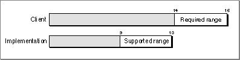

Legacy Document
Important: The information in this document is obsolete and should not be used for new development.
Important: The information in this document is obsolete and should not be used for new development.


Checking for Compatible Import Libraries
Checking compatibility between a client fragment and an import library essentially means checking for an intersection between the version range required by the client fragment and the range supported by the import library.When building a fragment that requires an import library, you must supply information in a definition stub library that defines the library's API. A stub library contains symbol definitions but does not contain actual code. The linker uses definition stub libraries to associate imported symbols with particular import libraries. Figure 1-8 shows an application linking to a definition stub library to produce the completed application. A reference such as
cowLib:setWindowmeans that the symbolsetWindowcan be found in the import librarycowLib.Figure 1-8 Linking to a definition stub library
An import library that provides implementation code is dynamically linked to the client fragment by the Code Fragment Manager during the preparation process. This library (sometimes called the implementation library) must be fully functional.
Figure 1-9 shows an implementation library bound to the application at runtime.
- Note
- Since an implementation library contains symbol definitions, the implementation library can act as a definition stub library at link time.

Figure 1-9 Using the implementation version of a library at runtime
The definition stub library may not be the same version as the implementation library (one may be an earlier version, for example), so the Code Fragment Manager must check to make sure that they are compatible. Generally the libraries are compatible if the library used at runtime can satisfy the programming interface defined for it during the build process.
When building an import library, you determine compatibility by defining version numbers. You should set three version numbers (usually by specifying linker options) for use in version checking:
When building a client fragment, the linker stores the current version and old implementation version numbers of the import library in the client. Later, when the Code Fragment Manager prepares the client fragment, it uses this information to check for a compatible import library.
- the current version number of the library you are creating
- the old implementation version number, which is the oldest version of this library available at runtime that supports the client's needs
- the old definition version number, which is the oldest version of the library defined for the client fragment that is supported by the library you are creating
Table 1-1 shows two different versions of an import library
cowLiband their version numbers.
Table 1-1 Two import libraries and their version numbers Name Current
version numberOld definition version number Old implementation version number cowLib 1313 9 10 cowLib 1616 12 14
If you build an application
- IMPORTANT
- The current version number must always be greater than or equal to both the old definition version number and the old implementation version number.

mooAppwithcowLib 13and attempt to run withcowLib 16, the compatibility ranges are as follows:
Figure 1-10 shows the compatibility ranges graphically.
cowLib 13is not compatible with implementations ofcowLibearlier than version 10 (its old implementation number is set to 10).cowLib 16(present in the Extensions folder, for example) is not compatible with definitions ofcowLibearlier than version 12 (its old definition version number is set to 12).
Figure 1-10 Library versions compatible with each other
The presence of an overlap between the two areas of compatibility indicates that the two import libraries are compatible in this case.
However, reversing the roles of the two libraries (building with
cowLib 16, executing withcowLib 13) results in a different set of compatibility ranges as follows:
In this case the two libraries are incompatible, as shown in Figure 1-11.
cowLib 16is not compatible with implementations ofcowLibearlier than version 14 (the old implementation version number is 14).cowLib 13is not compatible with definitions ofcowLibearlier than version 9 (the old definition version number is 9).
Figure 1-11 Library versions incompatible with each other

The library
cowLib 16may (for example) include additional routines that are not supported by versions older than 14.The Code Fragment Manager uses the algorithm shown in Listing 1-1 for checking import library compatibility. It uses this algorithm to check the compatibility of the fragment being prepared with all the import libraries from which it imports code and data.
Listing 1-1 Pseudocode for the CFM version-checking algorithm
if (Definition.Current == Implementation.Current) return(kLibAndAppAreCompatible); else if (Definition.Current > Implementation.Current) /*definition version is newer than implementation version*/ if (Definition.OldestImp <= Implementation.Current) return(kImplAndDefAreCompatible); else return(kImplIsTooOld); else /*definition version is older than implementation version*/ if (Implementation.OldestDef <= Definition.Current) return(kImplAndDefAreCompatible); else return(kDefIsTooOld);The fact that only one instance of an import library can appear in a given process may cause versioning conflicts. For example say an applicationmooAppuses the import librarymooLib. IfmooApploads a plug-inmooPlugthat also requiresmooLib, then the Code Fragment Manager uses the available connection formooLib. If this version is not compatible with the version required by the plug-in, then the preparation of the plug-in fails. (This failure occurs even if you designatedmooLibto be weak.)